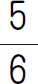
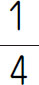
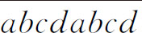

a 在整数范围内，整数a 除以整数b （b ≠0），若有a ÷b ＝q……r （即a ＝b ×q ＋r ），0≤r＜b ．当r ＝0时，我们称a 能被b 整除；当r ≠0时，我们称a 不能被b 整除，r 为a 除以b 的余数，q 为a 除以b 的商．例如12÷4＝3……0，我们称12能被4整除；13÷5＝2……3，我们称13不能被5整除，3为余数．
【解题技巧】
在解答一些数学实际问题的过程中，有时需要判断一个数能被哪些数整除，如果不直接用除法，就需要掌握一些数的整除的特征，才能做出准确的判断．对于有余数的除法，也需要适当地掌握一些余数的特征．例如：如果一个数的个位数字是偶数，那么这个数能被2整除；一个数除以4的余数，与它的末两位除以4的余数相同，等．
【基本公式】
1．被除数＝除数×商＋余数
除数＝（被除数-余数）÷商
商＝（被除数-余数）÷除数
2．同余定理
（1）如果a ，b 除以c 的余数相同，就称a ，b 对于除数c 来说是同余的，且有a 与b 的差能被c 整除（a ，b ，c 均为正整数）．
（2）a 与b 的和除以c 的余数，等于a ，b 分别除以c 的余数之和．注：当余数之和大于除数时，所求余数等于余数之和再除以c 的余数．
（3）a 与b 的乘积除以c 的余数，等于a ，b 分别除以c 的余数之积．注：当余数之积大于除数时，所求余数等于余数之积再除以c 的余数．
（第八届“希望杯”决赛）在20□12□的□内填上合适的数字，使该六位数能同时被2、3、5整除，有___种不同的填法．
【答案】 3．
【解析】 能被2整除的数，个位上的数能被2整除（偶数都能被2整除），那么这个数能被2整除；能被3整除的数，各个数位上的数字和能被3整除，那么这个数能被3整除；能被5整除的数，个位上为0或5的数都能被5整除，那么这个数能被5整除．由此可以判断这个数的个位一定是0，千位上是1、4、7．
【举一反三1】
（第九届“希望杯”初赛）如果六位数1992能被105整除，那么它的最后两位数是_____．
（第十二届“希望杯”初赛）若115、200、268被某个大于1的自然数除，得到的余数都相同，那么，用2014除以这个自然数，得到的余数是_____．
【答案】 8．
【解析】 这是一道数论中的余数问题．三个数被同一个数除，得到的余数相同，则这三个数的差一定能被同一个除数整除．200-115＝85，268-200＝68，85和68的最大公因数是（85，68）＝17，所以除数一定是17.2014÷17＝118……8，所以用2014除以这个自然数，得到的余数是8．
【举一反三2】
有一个整数，用它去除63、91、129，得到三个余数之和是25，这个整数是_____．
（第十届“走美杯”决赛）算式1！＋2！＋3！＋4！＋5！＋6！＋…＋2012！的计算结果除以1001的余数是_____．
【答案】 705．
【解析】 1001＝7×11×13，且n！（n≥13）除以1001的余数都是0．然后这个题目就变成了“算式（1！＋2！＋3！＋…＋9！＋10！＋11！＋12！）除以1001的余数”由于是求余数，所以大于1001的部分直接舍去不要，化简（1＋2＋6＋24＋120＋720＋35＋280＋518）÷1001＝1706÷1001＝1……705．所以余数为705．
【举一反三3】
（第十二届“希望杯”初赛）20140316÷5的余数是_____．
（第十二届“希望杯”初赛）若算式（1000×1001×1002×…×2013×2014）÷（11×11×…×11）［m 个11］的得数是整数，则m 的值最大是_____．
【答案】 102．
【解析】 这是一道数的整除性题．得数是整数，则除数一定是被除数的因数，除数是多少个11相乘，那么被除数中一定有相同个数的因数11，所以这道题中我们只需要计算出被除数有多少个因数11就可以了．1～999中，因数是11的个数是999÷11＝90……9，999÷（11×11）＝8……31，一共90＋8＝98（个）；同样算法，只取整数部分，1～2014中因数是11的个数是183＋16＋1＝200（个）．所以1000～2014中因数是11的个数是200-98＝102（个），则m 的最大值是102．
【举一反三4】
用1～9九个数字组成三个三位数，使其中最大的三位数被3除余2，并且还尽可能地小；次大的三位数被3除余1；最小的三位数能被3整除．那么，最大的三位数是_____．
1．有一个四位整数16□□，如果要让这个四位数同时能被2、3、4、5整除，那么这个四位数的末两位上应是什么数？
2．将既能被5整除又能被7整除的自然数自105起从小到大排成一行，取前2013个数．这2013个数的和被12除的余数是_____．
3．正整数n （n ＜20）使得（191919＋n ）（191919＋n ）除以19的余数是6，那么n 除以19的余数是_____．
4．甲、乙、丙、丁四个小朋友玩报数游戏，从1起按下面顺序进行：甲报1、乙报2、丙报3、丁报4、乙报5、丁报6、甲报7、乙报8、丙报9……这样，报1990的小朋友是_____．
5．由2002个6组成的2002位数被26除所得余数为_____．
6．有一串自然数排成一行，已知它的第1个数与第2个数互质，而且第1个数的

恰好是第2个数的
，从第3个数开始每个数正好是前2个数的和，那么这串数的第1999项被3除得的余数是_____．7．（第十二届“中环杯”决赛）在8001，80001，800001……这样的最高位上的数字为8，最低位上的数字为1，中间全是0的整数中，将其中能够被27整除但不能被81整除的数从小到大排列起来，其中第二个是_____．
8．（第十三届“中环杯”初赛）有多少个形如

的数能被18769整除？